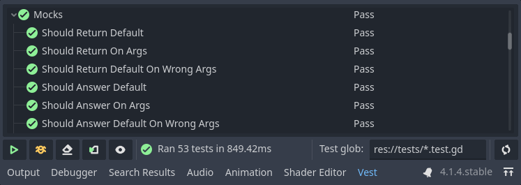

Your first test
This page will guide you through the basics of using vest. After that, refer to the User Guide for further info on individual features.
Creating a test class
Vest uses the VestTest base class for defining tests. These classes may
define test cases that contain the individual requirements, and test suites
that contain test cases, and possibly other, nested test suites.
Tests may be defined by implementing methods or using define(). This
documentation provides examples for both. See more in Writing tests.
As part of each test, we specify an expectation - i.e. what is the expected result of an operation. See Assertions.
extends VestTest
func get_suite_name() -> String:
return "Your first test"
func suite():
test("Addition", func():
expect_equal(2 * 2, 4)
)
extends VestTest
func get_suite_name() -> String:
return "Your first test"
func test_addition():
expect_equal(2 * 2, 4)
Running tests
Use the vest UI to run your tests, by pressing the Run button.

The test results will show up in the results panel.
If something doesn't work as expected, use the  Debug button after setting breakpoints in your code.
Debug button after setting breakpoints in your code.
You can also run tests using editor commands.
With your first test done, head over to the User Guide for more info on what vest can do.